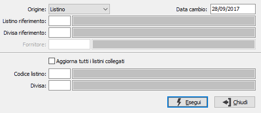

Riallineamento listini
La procedura consente la rigenerazione dei listini di vendita collegati ad un listino di acquisto principale in base alle regole fissate nella definizione listini. Il riallineamento può avvenire a partire da listini o da listini speciali, per un singolo listino derivato o per tutti i listini collegati.

ORIGINE: indica se trattare come dato di partenza un listino oppure un listino speciale.
DATA CAMBIO: definisce la data del cambio da utilizzare per la conversione del prezzo di eventuali listini collegati in divise differenti; il cambio viene ricercato nella tabella cambi listini e se non presente alla data specificata sarà ricercato alla data più recente rispetto alla data specificata.
LISTINO/DIVISA RIFERIMENTO: indicare l'associazione listino e divisa da cui sono stati originati i listini di vendita collegati. Sui campi sono attive le funzioni di ricerca (F9).
FORNITORE: nel caso si specifici come origine "Prezzi speciali" è necessario indicare il codice del fornitore per cui sono stati inseriti i prezzi. Sul campo sono attive le funzioni di ricerca (F9).
AGGIORNA TUTTI I LISTINI COLLEGATI: se spuntata questa casella saranno aggiornati tutti i listini di vendita collegati al listino origine.
LISTINO/DIVISA: nel caso non si spunti la casella soprastante è necessario indicare l'associazione listino e divisa da aggiornare; è ovvio che il listino da aggiornare deve essere tra quelli previsti collegati al listino origine. Sui campi sono attive le funzioni di ricerca (F9).